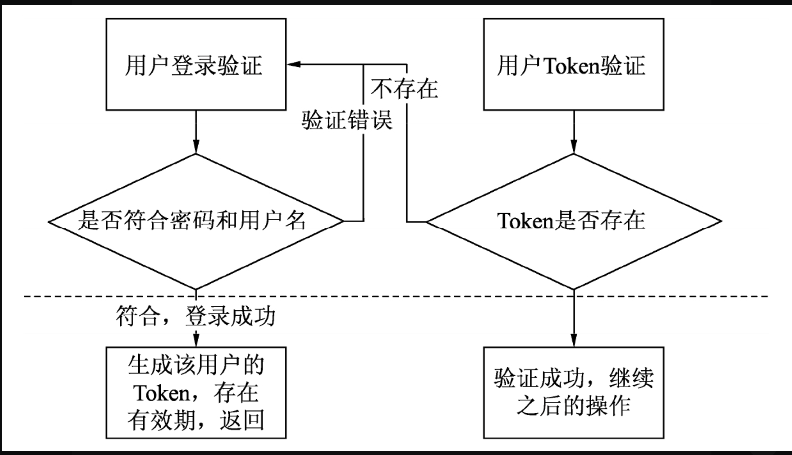

Contents
16. 用户权限相关API开发¶
本节编写需要用户登录处理的相关API，读者可以先开发登录和注册功能，或者采用不验证用户权限的方式进行开发，不会影响项目的后续功能。
提示：需要验证用户和进行权限判定的功能都可以独立于业务逻辑，只需要在相应的路由中增加中间件即可。
16.1. 1.用户模块开发前的准备工作¶
用户模块的开发依赖于用户验证工作，首先判断用户是否登录，其次判断用户的相关权限有哪些。
和之前章节采用fapp作为应用的唯一标识一样，本小节中用户的唯一标识也存储在请求头中，作为请求的一部分发送。如果用户是登录状态，则继续执行；如果用户没有登录，则返回一个错误提示。
用户的Token值应当唯一，每个Token值对应一个用户ID（唯一ID），该Token会随着时间过期而过期。笔者使用MD5算法生成一个唯一的值。
提示：在Node.js中使用MD5算法需要安装crypto模块。
基本的验证流程如图
所有的用户模块都编写在routers文件夹的users.js文件中，在其中引入controller文件夹中的user.js文件，它包含所有用到的业务逻辑。
为了方便用户管理，users.js文件中的路由不验证用户登录情况，主要提供用户注册和登录接口，用来获取Token，其中定义了一个二层路由，需要验证用户的登录状态。
用户验证的二层路由代码如下：
var express = require('express');
var router = express.Router();
//// 引入了逻辑处理的JavaScript文件（需要注意是否有其他路由使用到其他文件，均需要引入，本处已省略）
var {userLogin, userRegister} = require('../controller/user')
var {checkUser} = require('../util/middleware')
/* GET users listing. */
router.post('/login', userLogin);
router.post('/register', userRegister);
router.use('/user', checkUser, require('./userNeedCheck'))
module.exports = router;
用户登录检测中间件的代码依旧编写在util/middleware.js文件中，并命名为checkUser。当用户访问/users/user/下的所有路由时会使用该中间件
在middleware.js文件中定义检测用户登录状态的checkUser()方法，代码如下：
exports.checkUser = (req, res, next) => {
console.log("检测用户登录情况")
if ('token' in req.headers) {
let key = req.headers.fapp + ":user:token:" + req.headers.token
redis.get(key).then((data) => {
if (data) {
//保存用户名称
req.username = data.username
console.log(req.username)
next()
} else {
//key值错误或者是登录过期已经被删除
res.json(util.getReturnData(403, "登录已过期，请重新登录"))
}
})
} else {
res.json(util.getReturnData(403, "请登录"))
}
}
每一次请求需要验证用户的接口时，都在控制台中打印一条用户验证的相关语句。
16.2. 2.用户评论文章¶
接口路由地址是: http://localhost:3000/users/user/article/talk
该接口是一个POST请求接口，需要使用文章的唯一ID作为键。可以先编写文章发布功能，然后再编写评论功能。
{
"a_id": 1,
"talk": "这是第一次评论"
}
所有的评论将会通过article唯一键值的方式加入Redis数据库中，采用键名为book:article:article_id:talk的JSON对象存储。
首先编写路由文件userNeedCheck.js验证用户是否登录，代码如下：
var express = require('express');
var router = express.Router();
//// 引入了逻辑处理的JavaScript文件（需要注意是否有其他路由使用到其他文件，均需要引入，本处已省略）
var {articleTalk} = require('../controller/userNeedCheck')
//添加文章评论
router.post('/article/talk', articleTalk)
module.exports = router;
接下来编写具体的逻辑处理代码。在/controller/userNeedCheck.js文件中，需要将用户评论的内容和当前提交的时间写在该文章的评论对象中，代码如下：
//文章评论
exports.articleTalk = (req, res, next) => {
if ('a_id' in req.body && 'talk' in req.body) {
//组织字符串
let talk = {talk: req.body.talk, time: Date.now(), username: req.username}
let key = req.headers.fapp + ':article:' + req.body.a_id + ':talk'
redis.get(key).then((data) => {
let tData = []
if (data) {
tData = data
tData.push(talk)
} else {
tData.push(talk)
}
redis.set(key, tData)
res.json(util.getReturnData(0, '评论成功'))
})
} else {
res.json(util.getReturnData(1, '评论错误'))
}
}
通过Postman插件发送一个评论对象并且指定文章后，可以成功发表评论
{
"code": 0,
"message": "评论成功",
"data": []
}
16.3. 3.获取用户资料¶
接口路由地址为: http://localhost:3000/users/user/info/:username
也可以先编写用户注册的API，以提供用户注册的数据源，使数据库中有了真实的数据后，再返回来编写相应数据获取的业务逻辑代码。
{
"code": 0,
"message": "",
"data": {
"phone": "未知",
"nikename": "未知",
"age": "未知",
"sex": "未知",
"ip": "::1",
"username": "admin",
"login": 0
}
}
需要注意的是，该接口除了返回功能，还允许查看其他用户的资料。
当然，类似于电话号码这样的隐私数据，只显示给用户本人，其他用户无法查看。
首先编辑路由，该路由需要登录路由的验证，所以将代码编写在router文件夹的user- NeedCheck.js文件中，从controller中引入getUserInfo对象来执行处理逻辑。
var express = require('express');
var router = express.Router();
//// 引入了逻辑处理的JavaScript文件（需要注意是否有其他路由使用到其他文件，均需要引入，本处已省略）
var {getUserInfo} = require('../controller/userNeedCheck')
// 获得资料
router.get('/info/:username', getUserInfo);
module.exports = router;
接下来是逻辑处理部分，编写controller文件夹下的userNeedCheck.js文件，代码如下：
let redis = require("../util/redisDB")
const util = require('../util/common')
const crypto = require('crypto');
// 获得用户资料，不能包含密码
exports.getUserInfo = (req, res, next) => {
// 获得用户资料存在两种情况，一种是自己的资料，一种是他人资料
redis.get(req.headers.fapp + ":user:info:" + req.params.username).then((data) => {
if (data) {
if (req.params.username == req.username) {
// 自己的资料
delete data.password
} else {
// 他人资料，通过username查找
delete data.phone
delete data.password
}
res.json(util.getReturnData(0, '', data))
} else {
res.json(util.getReturnData(1, '用户不存在'))
}
})
}
当用户请求该接口并且符合已经登录的Token时，获取该用户的信息。
如果请求的是用户本人，会返回用户的电话（phone字段）；如果请求的是他人信息，则没有phone字段，
{
"code": 0,
"message": "",
"data": {
"nikename": "未知",
"age": "未知",
"sex": "未知",
"ip": "::1",
"username": "hujianli",
"login": 0
}
}
16.4. 4.修改用户资料¶
接口路由地址为: http://localhost:3000/users/user/changeInfo
也可以先编写用户注册的API、获取用户资料的API，以提供用户注册的数据源，使数据库中有了真实的数据后，再返回来编写相应数据获取的业务逻辑代码。
用户资料修改时，在Redis数据库中查找用户当前的Token值，找到符合的资料并将发送的数据和原本的数据进行整合，然后保存新数据，即修改成功。
首先编辑路由，该路由需要登录路由的验证，所以将代码编写在router文件夹的user- NeedCheck.js文件中，从controller中引入changeUserInfo对象来执行处理逻辑。
var express = require('express');
var router = express.Router();
//// 引入了逻辑处理的JavaScript文件（需要注意是否有其他路由使用到其他文件，均需要引入，本处已省略）
var {changeUserInfo} = require('../controller/userNeedCheck')
//修改用户资料
router.post('/changeInfo', changeUserInfo);
module.exports = router;
接下来是逻辑处理部分，编写controller文件夹下的userNeedCheck.js文件，代码如下：
// 更改用户资料
exports.changeUserInfo = (req, res, next) => {
let key = req.headers.fapp + ":user:info:" + req.username
redis.get(key).then((data) => {
if (data) {
let userData = {
username: req.username,
phone: 'phone' in req.body ? req.body.phone : data.phone,
nikename: 'nikename' in req.body ? req.body.nikename : data.nikename,
age: 'age' in req.body ? req.body.age : data.age,
sex: 'phone' in req.body ? req.body.sex : data.sex,
password: 'password' in req.body ? req.body.password : data.password,
// 用户是否被封停
login: data.login
}
redis.set(key, userData)
res.json(util.getReturnData(0, '修改成功'))
} else {
res.json(util.getReturnData(1, '修改失败'))
}
})
}
当用户请求该接口并且符合已经登录的Token时，修改用户资料并返回修改成功的提示
{
"phone": 13262662216,
"age": 18,
"sex": "男"
}
16.5. 5.发送私信¶
实现的接口路由地址为: http://localhost:3000/users/user/mail/:username
也可以先编写用户注册的API，以提供用户注册的数据源，使数据库中有了真实的数据后，再返回来编写相应数据获取的业务逻辑代码。
本小节中发送私信的API虽然在路径中传递参数，但其本身还传递其他数据，所以使用POST方式传输数据。返回格式如下：
{
"text": "hello nodejs."
}
首先编辑路由，该路由需要登录路由的验证，所以在router文件夹的userNeedCheck.js文件中编写代码，从controller中引入sendMail对象来执行处理逻辑。
var express = require('express');
var router = express.Router();
//// 引入了逻辑处理的JavaScript文件（需要注意是否有其他路由使用到其他文件，均需要引入，本处已省略）
var {sendMail} = require('../controller/userNeedCheck')
//发送私信
router.post('/mail/:username', sendMail)
module.exports = router;
接下来是逻辑处理部分，所有的私信内容采用两种保存办法：
对话的保存使用自增的key键值book:mail:mail_id，保存的是二者的对话内容。
采用book:user:username:mail将上述键值的唯一ID保存在JSON字符串中，这样每一个用户的对话就产生了联系。
注意：通过book:user:username:mail键值保存私信的唯一ID时需要保存两份，一份是发送者，另一份是接收者。编写controller文件夹下的userNeedCheck.js文件，代码如下：
//发送私信
exports.sendMail = (req, res, next) => {
let checkKey = req.headers.fapp + ":user:info:" + req.params.username
//验证用户是否存在
redis.get(checkKey).then((user) => {
console.log(checkKey)
console.log(user)
if (user && req.body.text) {
let userKey1 = req.headers.fapp + ':user:' + req.username + ':mail'
let userKey2 = req.headers.fapp + ':user:' + req.params.username + ':mail'
let mailKey = req.headers.fapp + ':mail:'
//保证两个用户之间只可能出现一次对话
redis.get(userKey1).then((mail) => {
if (!mail) mail = []
let has = false
for (let i = 0; i < mail.length; i++) {
if (mail[i].users.indexOf(req.params.username) > -1) {
has = true
// 对话已经存在，直接写
mailKey = mailKey + mail[i].m_id
redis.get(mailKey).then((mailData = []) => {
mailData.push({text: req.body.text, time: Date.now(), read: []})
redis.set(mailKey, mailData)
res.json(util.getReturnData(0, '发送私信成功'))
next()
})
}
}
if (!has) {
// 新对话，需获得唯一id
redis.incr(mailKey).then((m_id) => {
mailKey = mailKey + m_id
redis.set(mailKey, [{text: req.body.text, time: Date.now(), read: []}])
// 写用户的私信列表,user1已经获取了直接写
console.log({users: [req.params.username]})
mail.push({m_id: m_id, users: [req.username, req.params.username]})
redis.set(userKey1, mail)
//写第二个用户
redis.get(userKey2).then((mail2) => {
if (!mail2) mail2 = []
mail2.push({m_id: m_id, users: [req.username, req.params.username]})
redis.set(userKey2, mail2)
res.json(util.getReturnData(0, '发送新私信成功'))
})
})
}
})
} else {
res.json(util.getReturnData(1, '用户不存在，发送失败'))
}
})
}
当发送一条私信时，会更新上述代码中的3个对象，同时为该对话增加一个状态量read。
如果对应的状态量为空即“[]”，表示未读；如果为两个username，表示已读。
该状态量会在用户获取具体私信时变更。
{
"code": 0,
"message": "发送新私信成功",
"data": []
}
16.6. 6.获取私信列表¶
接口路由地址为: http://localhost:3000/users/user/mailsGet
也可以先编写用户注册的API，以提供用户注册的数据源，使数据库中有了真实的数据后，再返回来编写相应数据获取的业务逻辑代码。
本小节获取的数据只需要是私信列表即可，不需要具体的内容。
通过该用户的用户名可以获取该用户和其他用户的私信记录。记录中包含聊天的双方，所以无须请求私信内容即可完成接口。
首先编辑路由，该路由需要登录路由的验证，所以在router文件夹的userNeedCheck.js文件中编写代码，从controller中引入getMails对象来执行处理逻辑。
var express = require('express');
var router = express.Router();
//// 引入了逻辑处理的JavaScript文件（需要注意是否有其他路由使用到其他文件，均需要引入，本处已省略）
var {getMails} = require('../controller/userNeedCheck')
//获得私信列表
router.get('/mailsGet', getMails)
module.exports = router;
接下来是逻辑处理部分，编写controller文件夹下的userNeedCheck.js文件，代码如下：
let redis = require("../util/redisDB")
const util = require('../util/common')
const crypto = require('crypto');
//获取私信列表
exports.getMails = (req, res, next) => {
let userKey1 = req.headers.fapp + ':user:' + req.username + ':mail'
redis.get(userKey1).then((mail) => {
res.json(util.getReturnData(0, '', mail))
})
}
当用户请求该接口时，无须任何参数，系统会自动通过中间件获取Token对应的username，
用户获取私信列表
{
"code": 0,
"message": "",
"data": [
{
"m_id": 1,
"users": [
"hujianli",
"hujianli"
]
},
{
"m_id": 1,
"users": [
"hujianli",
"hujianli"
]
}
]
}
16.7. 7.获取私信¶
接口路由地址是: http://localhost:3000/users/user/mailGetter/:id。
本小节通过获取用户私信接口来获取具体的私信内容。需要注意的是，该接口除了返回对应的对话以外，还会返回对方的username，方便再次发送私信。
首先编辑路由，该路由需要登录路由的验证，所以在router文件夹的userNeedCheck.js文件中编写代码，从controller中引入getUserMail对象来执行处理逻辑。
var express = require('express');
var router = express.Router();
//// 引入了逻辑处理的JavaScript文件（需要注意是否有其他路由使用到其他文件，均需要引入，本处已省略）
var {getUserMail} = require('../controller/userNeedCheck')
//根据私信id获得私信详情
router.get('/mailGetter/:id', getUserMail)
module.exports = router;
接下来是逻辑处理部分，在controller文件夹的userNeedCheck.js文件中编写代码。
需要注意的是，该用户只是通过ID获取私信内容，因此必须要验证其是否为该私信的所有者后才能显示。
如果是第一次请求获取该私信，则需要为私信最后一条内容的read属性增加一个当前用户的用户名，表示当前用户已读，代码如下：
//获取私信内容
exports.getUserMail = (req, res, next) => {
let userKey1 = req.headers.fapp + ':user:' + req.username + ':mail'
let rData = {}
redis.get(userKey1).then((mail) => {
if (!mail) res.json(util.getReturnData(0, '', []))
let has = false
//获取内容
for (let i = 0; i < mail.length; i++) {
if (mail[i].m_id == req.params.id) {
has = true
// 删除自己的数据
mail[i].users.splice(mail[i].users.indexOf(req.username), 1)
rData.toUser = mail[i].users[0]
let key = req.headers.fapp + ':mail:' + req.params.id
redis.get(key).then((data) => {
//将自己的username写入read属性，代表已经读
//写最后一个
console.log(data)
if (data[data.length - 1].read.indexOf(req.username) < 0) {
data[data.length - 1].read.push(req.username)
}
//构造返回内容
rData.mail = data
redis.set(key, data)
res.json(util.getReturnData(0, '', rData))
next()
})
break;
}
}
if (!has) {
res.json(util.getReturnData(1, '请求错误'))
}
})
}
当用户请求获取私信接口且符合已经登录的Token，同时该私信还是用户发起或参与的，则获取的私信内容
{
"code": 0,
"message": "",
"data": {
"toUser": "hujianli",
"mail": [
{
"text": "hello nodejs.",
"time": 1658287074443,
"read": [
"hujianli"
]
}
]
}
}
16.8. 8.用户注册¶
接口路由地址为： http://localhost:3000/users/register。
用户注册是最重要的一个接口，也是用户模块的基本功能之一，如果用户注册都无法完成，则后续的用户登录模块无疑是不可用的。
注册接口采用POST请求方式，将所有的用户资料保存在数据库中，用户的名称是唯一ID（虽然这并非是最好的方式），键值是book:user:info:username，其中保存着用户的所有资料。
{
"code": 0,
"message": "注册成功，请登录",
"data": []
}
首先编辑路由文件routes/users.js，增加注册用户路由，并且引入处理逻辑的userRegister对象。代码如下：
var express = require('express');
var router = express.Router();
//// 引入了逻辑处理的JavaScript文件（需要注意是否有其他路由使用到其他文件，均需要引入，本处已省略）
var {userLogin, userRegister} = require('../controller/user')
var {checkUser} = require('../util/middleware')
/* GET users listing. */
router.post('/register', userRegister);
router.use('/user', checkUser, require('./userNeedCheck'))
module.exports = router;
接着编写相关的用户注册逻辑，其实非常简单，只需要验证用户是否存在。如果存在，则不允许注册；如果不存在，则直接保存。完整的controller/user.js注册代码如下：
// 用户注册API
exports.userRegister = (req, res, next) => {
//获得用户名和密码和其他资料
let username = req.body.username
let password = req.body.password
let ip = req.ip
if (username || password) {
let key = 'book:user:info:' + username
redis.get(key).then((user) => {
if (user) {
res.json(util.getReturnData(1, '用户已经存在'))
} else {
let userData = {
phone: 'phone' in req.body ? req.body.phone : '未知',
nikename: 'nikename' in req.body ? req.body.nikename : '未知',
age: 'age' in req.body ? req.body.age : '未知',
sex: 'phone' in req.body ? req.body.sex : '未知',
ip: ip,
username: username,
password: password,
// 用户是否被封停
login: 0
}
//存储数据，注册成功
redis.set(key, userData)
res.json(util.getReturnData(0, '注册成功，请登录'))
}
})
} else {
res.json(util.getReturnData(1, '资料不完整'))
}
}
在输入所有需要输入的内容后注册成功；如果是二次注册，则提示注册失败
{
"code": 1,
"message": "用户已经存在",
"data": []
}
16.9. 9.用户登录¶
接口路由地址为: http://localhost:3000/users/login。
和注册接口对应的就是登录接口，该接口的逻辑处理非常简单，使用POST发送相关用户名和密码请求在Redis中进行验证。如果符合，则用户登录成功；如果不符合，则登录失败，返回相关的提示。
登录成功后，生成一个具备有效期的用户Token，代码有效期设置为1000s，通过设置Redis的key有效期进行控制。判断用户权限时，如果有效期到期，则阻止用户的下一步操作。
//写入数据库，并且设置其过期时间
redis.set(tokenKey, data)
//设置为1000秒过期
redis.expire(tokenKey, 1000)
注意：这种设置有效期的方式非常“简单”“粗暴”，在实际使用场景中，可能需要记录和判断用户每次的登录操作，但并不删除数据。对一些需要长时间登录的系统，直接设置过期时间是不合理的，应当根据用户的操作判定用户是否退出。如果长时间没有任何请求，则认为用户已退出。
首先在users.js文件中定义路由并引入处理逻辑，代码如下：
var express = require('express');
var router = express.Router();
//// 引入了逻辑处理的JavaScript文件（需要注意是否有其他路由使用到其他文件，均需要引入，本处已省略）
var {userLogin, userRegister} = require('../controller/user')
var {checkUser} = require('../util/middleware')
/* GET users listing. */
router.post('/login', userLogin);
router.use('/user', checkUser, require('./userNeedCheck'))
module.exports = router;
接着编写controller/user.js文件中的逻辑处理部分，生成用户的Token采用较为简单的方式：以字符串形式连接用户名称和当前的时间戳，再通过MD5算法获取最终的Token值。代码如下：
// 用户登录API
exports.userLogin = (req, res, next) => {
//获得用户名和密码
let username = req.body.username
let password = req.body.password
redis.get(req.headers.fapp + ":user:info:" + username).then((data) => {
if (data) {
if (data.login == 0) {
if (data.password != password) {
res.json(util.getReturnData(1, '用户名或者密码错误'))
} else {
//这里采用简单的token生成，根据用户名和当前时间戳直接生成md5值
let token = crypto.createHash('md5').update(Date.now() + username).digest("hex")
let tokenKey = req.headers.fapp + ":user:token:" + token
//为了方便查找，将user的资料存放在该token为键的k-v对象中
delete data.password
//写入数据库，并且设置其过期时间
redis.set(tokenKey, data)
//设置为1000秒过期
redis.expire(tokenKey, 1000)
res.json(util.getReturnData(0, '登录成功', {token: token}))
}
} else {
res.json(util.getReturnData(1, '用户被封停'))
}
} else {
res.json(util.getReturnData(1, '用户名或者密码错误'))
}
})
}
发送正确的用户名和密码，可以获取用户的Token。需要注意的是，如果用户多次登录，上一次的登录并不会从数据库中删除，该Token的存在会一直持续到其时间到期为止，这样的处理方式保证了用户可以多点登录而不受影响。
登录成功
{
"code": 0,
"message": "登录成功",
"data": {
"token": "57e3b0e5bc10644845b51764929e31fa"
}
}
注意：如果用户要求单点登录，第二次登录时可以清除之前所有的Token。
更改后的middleware.js文件代码如下：
exports.checkUser = (req, res, next) => {
console.log("检测用户登录情况")
if ('token' in req.headers) {
let key = req.headers.fapp + ":user:token:" + req.headers.token
redis.get(key).then((data) => {
if (data) {
//保存用户名称
req.username = data.username
console.log(req.username)
next()
} else {
//key值错误或者是登录过期已经被删除
res.json(util.getReturnData(403, "登录已过期，请重新登录"))
}
})
} else {
res.json(util.getReturnData(403, "请登录"))
}
}
Token过期
{
"code": 403,
"message": "登录已过期，请重新登录",
"data": []
}
16.10. 10.文章分类列表¶
接口路由地址为: http://localhost:3000/users/user/articleType
也可以先编写添加和修改分类的API，以提供文章分类详情的数据源，使数据库中有了真实的数据后，再返回来编写该内容。其实分类列表的获取非常简单，只需要读取Redis中存储的book:a_type键值即可。
var express = require('express');
var router = express.Router();
//// 引入了逻辑处理的JavaScript文件（需要注意是否有其他路由使用到其他文件，均需要引入，本处已省略）
var {getUserInfo, sendMail, getMails, getUserMail, getArticleType, articleLike, articleCollection, getCollection, articleTalk,changeUserInfo} = require('../controller/userNeedCheck')
//获得所有文章分类
router.get('/articleType', getArticleType)
module.exports = router;
接下来是逻辑处理部分，编写controller文件夹下的userNeedCheck.js文件，代码如下：
//获取所有文章分类
exports.getArticleType = (req, res, next) => {
redis.get("book:a_type").then((data) => {
res.json(util.getReturnData(0, '', data))
})
}
当用户请求该接口并且符合已经登录的Token时，将获取所有的文章分类并以数组的方式返回，其中包含类型的唯一ID和分类的名称。
获取文章分类列表
{
"code": 0,
"message": "",
"data": [
{
"uid": 1,
"name": "分类1"
},
{
"uid": 2,
"name": "分类2"
}
]
}
16.11. 11.文章“点赞”和“踩”功能¶
的接口路由地址为： http://localhost:3000/users/user/like/:id/:like
也可以先编写文章添加和修改的API，以提供文章添加的数据源，使数据库中有了真实的数据后，再返回来编写该接口内容。
本例规则很简单，采用一个数值代表“点赞”和“踩”功能，不规定一人可以单击几次。
每次请求该接口需要传递两个参数：一个是文章的ID，另一个是“点赞”或“踩”。这里规定传递的第2个参数like如果为0，则代表“踩”（a_like-1）；如果大于0，则代表“点赞”（a_like+1）。
执行： http://localhost:3000/users/user/like/1/0
然后查看文章文章详情：http://localhost:3000/getArticle/1
"like": "1"
{
"code": 0,
"message": "success",
"data": {
"title": "测试文章1",
"writer": "admin",
"text": "测试文章1",
"type": 1,
"tag": [
"js",
"node"
],
"show": 1,
"time": 1658280576995,
"a_id": 1,
"typename": "分类1",
"view": "3",
"like": "1"
}
}
注意：如果要限制用户点赞或踩的次数，重新使用一个键-值对或hash记录该文章的id与用户的username即可。
首先编辑路由，该路由需要登录路由的验证，所以在router文件夹的userNeedCheck.js文件中编写代码，从controller中引入articleLike对象来执行处理逻辑。
var express = require('express');
var router = express.Router();
//// 引入了逻辑处理的JavaScript文件（需要注意是否有其他路由使用到其他文件，均需要引入，本处已省略）
var {articleLike} = require('../controller/userNeedCheck')
//文章点赞和踩
router.get('/like/:id/:like', articleLike)
module.exports = router;
接下来是逻辑处理部分，在controller文件夹的userNeedCheck.js文件中编写代码如下：
//文章点赞或踩
exports.articleLike = (req, res, next) => {
let member = req.headers.fapp + ":article:" + req.params.id
let like = req.params.like
if (like == 0) {
//采用自减操作进行
redis.zincrby(req.headers.fapp + ":a_like", member, -1)
} else {
//采用自增操作进行
redis.zincrby(req.headers.fapp + ":a_like", member)
}
res.json(util.getReturnData(0, 'success'))
}
用户请求该接口时，如果已经登录，则根据路径中携带的文章信息和点赞（踩）标识执行“点赞”或“踩”操作，通过数据库的自增和自减来实现。
文章的“点赞”和“踩”功能
{
"code": 0,
"message": "success",
"data": []
}
16.12. 12.文章收藏¶
接口路由地址为： http://localhost:3000/users/user/save/:id
文章收藏接口比较简单，使用一个和用户对应的键-值对直接保存即可。首先编辑路由，该路由需要登录路由的验证，在router文件夹的userNeedCheck.js文件中编写代码如下：
var express = require('express');
var router = express.Router();
//// 引入了逻辑处理的JavaScript文件（需要注意是否有其他路由使用到其他文件，均需要引入，本处已省略）
var {articleCollection} = require('../controller/userNeedCheck')
//文章收藏
router.get('/save/:id', articleCollection)
module.exports = router;
接下来是逻辑处理部分，在controller文件夹的userNeedCheck.js文件中编辑代码如下：
//文章收藏
exports.articleCollection = (req, res, next) => {
let key = req.headers.fapp + ":user:" + req.username + ":collection"
//获取参数
let a_key = req.headers.fapp + ":article:" + req.params.id
redis.get(a_key).then((data) => {
if(data){
//获取原本的
redis.get(key).then((tData) => {
if (!tData) tData = []
tData.push({time: Date.now(), a_id: req.params.id, title: data.title})
redis.set(key, tData)
res.json(util.getReturnData(0, 'success'))
})
}else{
res.json(util.getReturnData(1, '文章不存在'))
}
})
}
当用户通过文章收藏接口收藏文章时，首先会检测文章是否存在，如果不存在则收藏失败。成功收藏的效果如下：
收藏文章
{
"code": 0,
"message": "success",
"data": []
}
16.13. 13.获取文章列表¶
接口路由地址为: http://localhost:3000/users/user/saveList
通过获取文章收藏列表接口可以获取username和相应的数据并返回给用户端。
首先编辑路由，该路由需要登录路由的验证，在router文件夹的userNeedCheck.js文件中编写代码如下：
var express = require('express');
var router = express.Router();
//// 引入了逻辑处理的JavaScript文件（需要注意是否有其他路由使用到其他文件，均需要引入，本处已省略）
var {getCollection} = require('../controller/userNeedCheck')
//收藏列表获取
router.get('/saveList', getCollection)
module.exports = router;
接下来是逻辑处理部分，在controller文件夹的userNeedCheck.js文件中编写代码如下：
//获取收藏地址
exports.getCollection = (req, res, next) => {
let key = req.headers.fapp + ":user:" + req.username + ":collection"
redis.get(key).then((data) => {
res.json(util.getReturnData(0, '', data))
})
}
当用户请求该接口时，效果如下
{
"code": 0,
"message": "",
"data": [
{
"time": 1658296646828,
"a_id": "1",
"title": "测试文章1"
},
{
"time": 1658296650471,
"a_id": "2",
"title": "测试文章2"
}
]
}